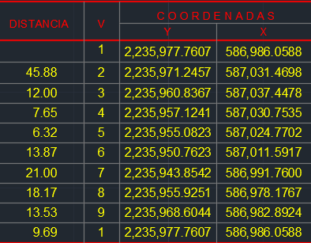

COORDENADAS LISTAS PARA IMPORTAR
Tus puntos, en orden.
Listos para importar.
Lee una tabla de coordenadas y obtén tu TXT:
número de punto, coordenada X, coordenada Y.
01 Carga tu imagen02 Revisa tus puntos03 Descarga tu TXTSin registros. Sin complicaciones.
01
EJEMPLOTu documento

VISTA DE EJEMPLOPega tres columnas con encabezados o selecciona su orden arriba.
La salida siempre será punto, X, Y.
La lectura es local. Tu imagen no se envía a un servidor.
Conserva los decimales y elimina los separadores de miles. Lee los encabezados para distinguir X de Y.
02
9 puntosTus coordenadas
Tabla de ejemplo. Sube tu imagen para extraer tus puntos.
Formato de salidapunto, X, Y
Compara los números con la imagen. No se redondean ni se renumeran los puntos.
PuntoX · EsteY · Norte
Ver texto detectado
El orden correcto
La imagen puede mostrar Y primero. El TXT entrega X, Y.
Todos tus decimales
Se conserva la precisión de los números detectados.
Listo para tu trabajo
Copia o descarga las filas para importarlas en CAD.